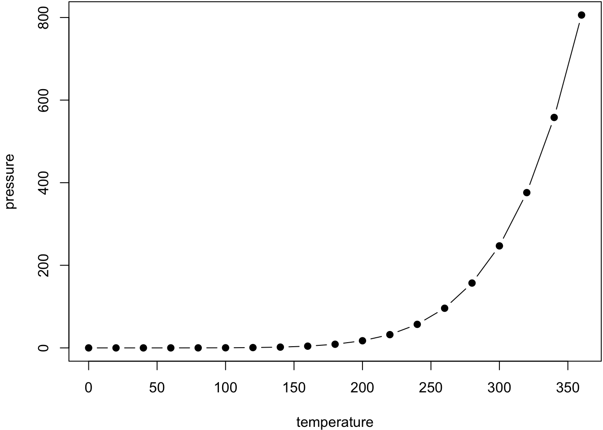

2 Henkirikokset
Karoliina Suonpää
Tiivistelmä
-Vuonna 2020 maassamme tehtiin 95 kuolemaan johtanutta väkivaltarikosta. Rikollisuustaso oli 1,7 rikosta 100 000 asukasta kohti.
-Henkirikosten määrä lisääntyi vuonna 2020 14 prosenttia edellisvuoden tasosta, mutta oli edelleen selvästi alle 1990-luvun ja 2000-luvun alun keskitason.
-Vuoden 2020 tapahtumissa korostuivat yksityiset tilat yleisten tilojen kustannuksella.
-Henkirikollisuuttamme hallitsee syrjäytyneiden ja alkoholisoituneiden miesten keskinäinen väkivalta. Rikokset liittyvät kiinteästi alkoholinkäyttötilanteisiin.
-Maamme henkirikollisuuden asukaslukuun suhteutettu taso on matalampi kuin Venäjän ja Baltian maiden, mutta korkeampi kuin läntisten naapurimaidemme. Ero muihin Pohjoismaihin muodostuu pääosin syrjäytyneiden ja alkoholisoituneiden miesten alkoholisidonnaisista rikoksista. Työssä käyvän väestön rikollisuustaso ei Suomessa juurikaan eroa muista Pohjoismaista.
Yksiselitteisin väkivaltarikoksia erittelevä piirre on uhrin kuolema. Kuolemaan johtanutta väkivaltaa koskevat tilastotiedot ovat verraten luotettavia sosiaali-indikaattoreita, koska niiden kohdalla piilorikollisuuden ja teon oikeudellisen määrittelyn aiheuttamat ongelmat ovat pienempiä kuin muissa väkivaltarikoksissa. Muussa kuin kuolemaan johtaneessa väkivallassa tilastoidun rikollisuuden määrään vaikuttavat muun muassa uhrien ja sivullisten ilmoitusalttius, poliisin tutkinta- ja kontrollitoiminta sekä lainsäädännön muutokset. Tarkastelemme tässä luvussa kuolemaan johtanutta väkivaltaa ja seuraavassa luvussa muita väkivaltarikoksia.
2.1 Tietolähteet ja piilorikollisuus
Suomen rikoslaissa on viisi rikosnimikettä, joiden tunnusmerkistö sisältää tahallisen väkivallan seurauksena aiheutetun toisen ihmisen kuoleman: murha, tappo, surma, lapsensurma sekä rikosnimikeyhdistelmä pahoinpitelyrikos ja kuolemantuottamusrikos. Kuolemaan johtavan väkivallan tärkeimmät osoitinjärjestelmät ovat:
-A. Poliisin ja oikeuslaitoksen tilastot. Tilastokeskuksen vuosittain julkaisema poliisiasiain tietojärjestelmään pohjautuva poliisitilasto kuvaa poliisin tietoon tullutta rikollisuutta. Tilasto on henkirikosten osalta uhripohjainen, kukin henkirikoksen uhriksi joutunut henkilö tilastoidaan poliisitilastoon erillisenä rikoksena. Tilasto on myös aluepohjainen, se sisältää vain Suomen viranomaisten tutkimat eli lähinnä vain Suomessa tehdyt henkirikokset. Niin ikään Tilastokeskuksen julkaisema oikeustilasto kertoo henkirikoksesta vuosittain tuomittujen henkilöiden määrän sekä antaa tietoja henkirikoksista tuomituista rangaistuksista. Tilasto pohjautuu oikeuslaitoksen toimittamiin tietoihin.
-B. Kuolemansyytilasto. Terveydenhuoltoviranomaisten tietoihin pohjautuvasta kuolemansyytilastosta ilmenee vuoden aikana tahallisen väkivallan aiheuttamiin vammoihin kuolleiden määrä. Tilasto on väestöpohjainen, siihen kirjataan Suomessa vakinaisesti asuvien henkilöiden kuolemantapaukset riippumatta siitä, missä henkilö on kuollut. Kirjauksen edellytyksenä on, että vainajasta on kirjoitettu kuolinsyytodistus. Jos esimerkiksi uhrin ruumis on hävitetty tai sitä ei ole löytynyt, todistusta ei voi kirjoittaa.
-C. Henkirikosseuranta. Vuodesta 2002 alkaen olemassa on ollut poliisitilaston ja kuolemansyytilaston ohella kolmas henkirikollisuuden määrää mittaava tietokanta, henkirikosseuranta. Siihen kirjataan Tilastokeskuksen pitämän poliisitilaston tavoin poliisin tietoon tulleet henkirikokset (ja tahallisiin pahoinpitelyrikoksiin liittyvät kuolemantuottamusrikokset). Poliisitilastosta seurannan erottaa se, että rikokset kirjataan pääsääntöisesti vasta kun esitutkinta on päättynyt. Tiedot kerätään erillisellä sähköisellä lomakkeella suoraan rikostutkijoilta. Järjestelmä sisältää huomattavasti enemmän tietoa tekojen piirteistä ja osapuolista kuin muut edellä mainitut tietolähteet.
Osoitinjärjestelmien tiedot henkirikosten määrästä poikkeavat suhteellisen paljon toisistaan. Kuolemansyytilaston ilmoittama henkirikoksiin kuolleiden vuotuinen määrä on viimeisten kymmenen vuoden aikana ollut keskimäärin 30 henkilöä (27 %) pienempi kuin poliisitilaston antama. Syitä eroon on kolme: erot kirjaamisperusteissa, kirjaamisvirheet ja epäselvät väkivaltaiset kuolemantapaukset. Viimeksi mainitut selittävät suurimman osan erosta. Poliisitilastoon kirjautuu henkirikoksina kunkin vuoden loppupuolelta huomattava määrä tutkinnassa olevia epäselviä kuolemantapauksia, jotka myöhemmin todetaan tapaturmiksi, itsemurhiksi tai luonnollisiksi kuolemiksi. Nyrkkisääntönä voi pitää, että poliisitilaston osoittama henkirikosten vuotuinen kokonaismäärä on 10–15 prosenttia tosiasiallista viranomaisten tietoon tulleiden rikosten määrää korkeampi, kuolemansyytilaston antama puolestaan saman verran sitä pienempi. Henkirikosseurannan mukaan Suomessa on vuosina 2009–2018 surmattu vuosittain keskimäärin 92 ihmistä; uhrien määrä on 16 prosenttia pienempi kuin poliisitilaston näyttämä ja 15 prosenttia korkeampi kuin kuolemansyytilaston osoittama. Luku on oletettavasti varsin lähellä tosiasiallisesti surmattujen ihmisten vuotuista määrää. Virallistilastoista lähimpänä seurannan osoittamaa määrää on poliisitilaston näyttämä tappojen, murhien ja surmien yhteismäärä. On huomioitava, että eriävyydet tasossa eivät välttämättä johda eriävyyksiin trendissä. Toisin sanoen eri lähteet voivat antaa samanlaisen ja yhtä luotettavan kuvan kehityksen suunnasta, vaikka ne antaisivat keskenään poikkeavan kuvan ilmiön yleisyydestä (ks. kohta 2.2).
Vuosittaista henkirikosten määrää ei tosiasiassa voida selvittää täydellisellä tarkkuudella. Pääsyinä ovat syiltään epäselviksi jäävät alkoholisidonnaiset väkivaltavammakuolemat ja kokonaan ilmi tulematta jäävät henkirikokset. Ensin mainittuja on joka vuosi useampia. Niissä itse kuolemantapaus tulee viranomaisten tietoon, mutta väkivaltaisesti kuolleen henkilön vammojen syntytapaa ei jälkikäteen kyetä selvittämään. Silminnäkijöitä ei useinkaan ole ja jos on, he eivät yleensä muista tapahtuman yksityiskohtia. Myös ulkoisen väkivallan aiheuttamien vammojen lopullinen vaikutus uhrin kuolemaan on näissä tapauksissa usein epäselvä uhrin jo ennestään heikon terveydentilan johdosta. Pääosassa tapauksia rikostutkinta päätetään, koska rikoksen tapahtumisesta ei saada riittävää näyttöä.
Varsinainen piilorikollisuus – rikokset, jotka eivät tule lainkaan rikosepäilynä viranomaisten tietoon – on nykykäsityksen mukaan maamme henkirikollisuudessa vähäistä. Viranomaiset ja tutkijat arvioivat, että joka vuosi muutama tahallinen henkirikos jää tulematta ilmi. Kyse on yleensä kadonneista henkilöistä, joita ei löydetä ja joiden katoamisen syytä ei voida varmuudella selvittää. Toisaalta viime vuosina on ilmennyt, että kuolemansyyntutkintajärjestelmään ja terveydenhuollon valvontajärjestelmiin liittyy puutteita, joiden johdosta kiinnijäämisriski hoitohenkilöstön potilaisiin kohdistamissa henkirikoksissa (niin laitoksissa kuin kotihoidossakin) on selvästi muuta henkirikollisuutta pienempi. Tämän tyyppistä piilorikollisuutta ei aiemmissa arvioissa ole lainkaan huomioitu, joten arviot ovat saattaneet antaa liian myönteisen kuvan piilorikollisuuden määrästä henkirikollisuudessamme.
Vuosittain tulee ilmi ja tilastoidaan niin ikään muutamia henkirikoksia, jotka on tehty jo vuosia aikaisemmin. Sekä kuolemansyytilasto että poliisitilasto sisältävät lisäksi yksittäisiä rikoksia, jotka on tehty Suomen rajojen ulkopuolella (Lehti 2002, 11–14; Pajuoja & Salminen 1996).
2.2 Poliisin tietoon tullut rikollisuus
Viime vuoden aikana poliisin tietoon tulleiden murhien, tappojen ja surmien yhteenlaskettu määrä oli 86. Edelliseen vuoteen verrattuna kasvua oli 19 prosenttia. Kasvusta huolimatta määrä oli selvästi alle kymmenvuotisjakson keskiarvon (taulukko 1).
henkirikollisuus
Poliisin tietoon tulleet henkirikokset olivat tappoja (38 %) tai murhia (62 %), surmia ja lapsensurmia ei tilastoitu yhtään. Edellisten lisäksi poliisin tietoon tuli yhdeksän pahoinpitelyrikoksen yhteydessä tehtyä kuolemantuottamusta. Niin ollen kuolemaan johtaneiden väkivaltarikosten kokonaismäärä oli 95 ja kasvua edellisvuodesta 14 prosenttia.
henkirikollisuus
Kuten edellä todettiin, eri osoitinjärjestelmät antavat hieman toisistaan poikkeavan kuvan henkirikosten lukumäärästä. Henkirikosseurannan ja kuolemansyytilaston tuorein käytettävissä oleva tieto on vuodelta 2019. Henkirikosseurannan mukaan tahallisten henkirikosten määrä vuonna 2019 oli 88, kasvua edelliseen vuoteen oli kaksi prosenttia (taulukko 2). Kuolemansyytilaston mukaan kyseisenä vuonna surmattiin 65 henkilöä. Tasoerosta huolimatta kuolemansyytilasto antaa vakavimman väkivallan ajallisesta kehityksestä samanlaisen kuvan kuin poliisitilasto ja henkirikosseuranta, joihin seuraavat tarkastelut perustuvat.
henkirikollisuus
Kuviossa 1 on esitetty kolmen vuoden liukuvana keskiarvona kuolemaan johtaneiden väkivaltarikosten (yhtenäinen viiva) sekä murhien, tappojen ja surmien (katkoviiva) määrän kehitys vuosina 1998–2020. Rikosten määrät on suhteutettu asukaslukuun. Sarjojen välinen ero muodostuu pääosin rikoksista, joita on tutkittu kuolemantuottamuksina pahoinpitelyrikoksen yhteydessä. Molemmat osoittimet kuvaavat henkirikollisuuden vähentyneen kahden viimeisen vuosikymmenen aikana. Vuosittaisten erojen huomioimiseksi on syytä tarkastella myös edellä esitettyjä tekomäärien vuotuissarjoja sekä taulukossa 3 esitettyjä väestöön suhteutettuja vuotuissarjoja. Viime vuoden väestöön suhteutettu henkirikostaso oli edellisvuotta korkeampi.
Kuvio 2 kuvaa kuolemaan johtaneen väkivallan kehitystä 1960-luvulta alkaen kuolemansyytilastoon pohjautuen. Vuotta nuorempina surmatut lapset on poistettu kuvion tarkastelusta. Heihin kohdistuneet henkirikokset ovat pääosin vastasyntyneen surmia ja eroavat muusta henkirikollisuudesta. Vastasyntyneen surmat ovat nykyisin erittäin harvinainen rikollisuuden muoto ja niiden määrä on vähentynyt jyrkästi 1900-luvun jälkipuoliskolta alkaen: 1950-luvulla surmattiin vuosittain vielä keskimäärin 15 alle yksivuotiasta lasta, 1990-luvulla määrä oli 1,6 ja 2010-luvulla enää 0,5. Ikäryhmän vuotuinen henkirikoskuolleisuus on laskenut samaan aikaan 1950-luvun 1,2 surmatusta 10 000 elävänä syntynyttä kohti 2010-luvun 0,1 surmattuun (Kivivuori 1999).
2.3 Henkirikollisuuden piirteitä
2.4 Henkirikollisuuden alueellinen jakautuminen
2.5 Kansainvälistä vertailua
Lähteet
Figures and tables with captions can also be cross-referenced from elsewhere in your book using \@ref(fig:chunk-label) and \@ref(tab:chunk-label), respectively.
See Figure ??.
